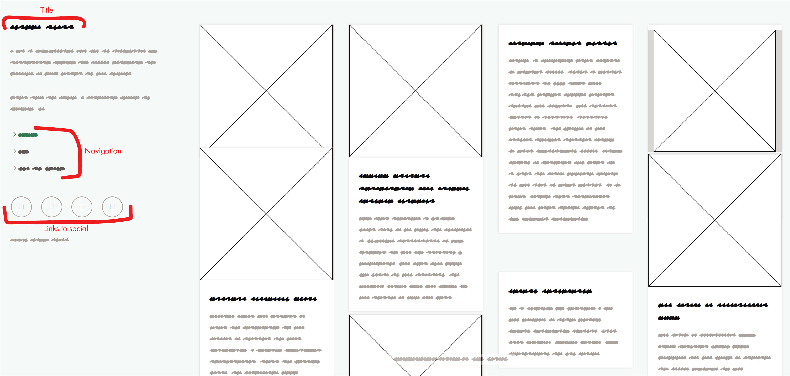

Wireframes
You use wireframes to help you plan the look of your webpages. Below are some examples of low fidelity wireframes and tips for creating your own.

A wireframe is a sketch of the layout of your website. When planning your design layout, you should ask yourself: What do the people who will use my website need to do/see first?
Basic wireframes use placeholders for media like pictures and videos. In this stage, you don't have to worry about the content of your webpage, just the layout. In the wireframe pictured to the right, the boxes with X's through them represent pictures.
Usually, wireframes start out with no colors because you don't want to get distracted by a specific part of the design at this stage. However, you can use color to make the meaning of your wireframe elements easier to understand for your clients or other members of your design team. In this case, you can easily tell that the black scribbles are intended to be titles and the gray scribbles represent paragraph text.
When your wireframes will be viewed and evaluated by other people, labeling certain elements in your sketches can make the wireframe easier to understand.
Creating your wireframe
A wireframe made with https://wireframe.cc/
For your assignment, you have the option of creating your wireframe physically or digitally. Often it helps to start sketching on paper, even if you plan to create a digital wireframe.
To create an analog wireframe, just grab a marker and paper and get to work! If you want to create your wireframe digitally, try https://wireframe.cc/
Analog Wireframes
Creating your wireframes in a physical format, whether on paper or a whiteboard is the fastest and easiest ways to get your ideas from your head out into the world. If you're working on a team, the collaborative aspects of a physical wireframe makes the initial drafts come together quickly.
Digital Wireframes
While physical wireframes might have the upper hand for internal collaboration, digital wireframes take the cake for external presentations. Digital wireframes tend to look more clean and professional. They make it easy to copy design elements between multiple wireframes and edit aspects based on feedback. When you're finished, you can quickly send it off for approval.
Labeled Google Search Page Wireframe
Unlabeled Google Search Page Wireframe
Labeling your Wireframes
While a wireframe is simply a plan, the more specific your plan is the easier it will be for you when you're building out your website.
You can see how in-depth one can get on something as simple as a Google search results page. Notice the difference between the labeled version and the unlabeled version of the same page.
The better your roadmap is, the easier it will be to get to your destination.
If you were working with a client, you would use your labeled wireframe to create a high fidelity wireframe. High fidelity wireframes incorporate the intended colors and visuals for the website. Think of them as a mock-up for your website.
Our first google search results wireframe is close to being a high fidelity wireframe. It includes the actual logo and icons that would be used on the page. Colors on the wireframe are also the intended color of those elements in the finished product.
Remember, in a low fidelity wireframe, you can use color to make your design easier to interpret, but you shouldn't be thinking about the end product.
For our purposes, you don't need to create anything more than a low fidelity wireframe, but it's important to be aware of what clients might expect from you.
Beginning to think about Interactions
The desktop version of a wireframe that includes webpage functions.
Congratulations! When you're wireframing, you are already designing for User Experience. We'll get more into this next week, but it's never too early to think about how your website will work.
Above you can see the labels for the functions of the webpage. In this particular wireframe, the left-side navigation bar is fixed, and only the right-side content moves when you scroll through the page. This allows the user to navigate the website without having to scroll up to the top of the page.
That's not the case on this webpage. Is that conducive to the User Experience?
Another important thing to think about is how your website will look on mobile devices. Pictured is a mobile wireframe of the same webpage. Notice that since mobile views have less horizontal space, the navigation menu is no longer fixed on the left side of the page. Instead, there is a fixed dropdown menu at the top of the screen.
The mobile version of the same wireframe that includes webpage functions.
Back to Top ↑